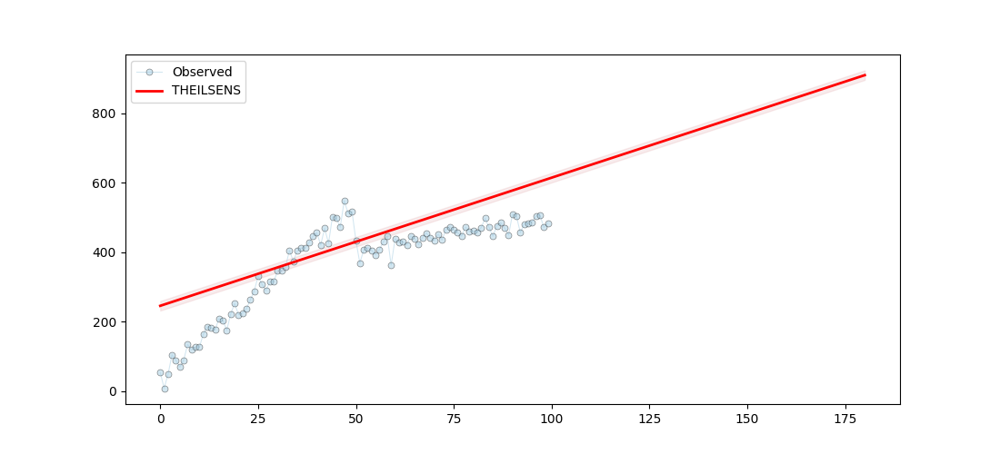

Note
Click here to download the full example code
Regression - Theil-Sen¶
Out:
Series:
theilsens-slope 3.6617
theilsens-intercept 242.2415
theilsens-ci_lower 3.0729
theilsens-ci_upper 4.2824
theilsens-x [0, 1, 2, ...
theilsens-y [48.757153...
theilsens-model (3.6617086...
theilsens-id THEILSENS
dtype: object
Summary:
TheilSens Slope
==================================
slope: 3.6617
intercept: 242.2415
ci_lower: 3.0729
ci_upper: 4.2824
==================================
UEVAAA
Grid Search:
0 1
theilsens-s... 3.6617 3.6617
theilsens-i... 242.2415 242.2415
theilsens-c... 3.0729 3.1766
theilsens-c... 4.2824 4.1798
theilsens-a... 0.05 0.1
theilsens-x [0, 1, 2, ... [0, 1, 2, ...
theilsens-y [48.757153... [48.757153...
theilsens-m... (3.6617086... (3.6617086...
theilsens-id THEILSENS THEILSENS
10 11 12 13 14 15 16 17 18 19 20 21 22 23 24 25 26 27 28 29 30 31 32 33 34 35 36 37 38 39 40 41 42 43 44 45 46 47 48 49 50 51 52 53 54 55 56 57 58 59 60 61 62 63 64 65 66 67 68 69 70 71 72 73 74 75 76 77 78 79 80 81 82 83 84 85 86 87 88 89 90 91 92 93 94 95 96 97 98 99 100 101 102 103 104 | # Libraries
import numpy as np
import pandas as pd
# Libraries.
import matplotlib.pyplot as plt
# Import pyamr
from pyamr.datasets.load import make_timeseries
from pyamr.core.regression.theilsens import TheilSensWrapper
# Set pandas configuration.
pd.set_option('display.max_colwidth', 14)
pd.set_option('display.width', 150)
pd.set_option('display.precision', 4)
def make_line(length, offset, slope):
"""Create straight series."""
# Create timeseries.
x = np.arange(length)
y = np.random.rand(length) * slope + offset + x
return x, y
# ----------------------------
# create data
# ----------------------------
# Constants
length = 100
offset = 100
slope = 10
# Create series
#x, y = make_line(length, offset, slope)
# Create timeseries data
x, y, f = make_timeseries()
# Create object
theilsens = TheilSensWrapper().fit(x=x, y=y)
# Print series.
print("\nSeries:")
print(theilsens.as_series())
# Print summary.
print("\nSummary:")
print(theilsens.as_summary())
# -----------------
# Predictions
# -----------------
# Variables.
start, end, = None, 180
# Compute predictions.
preds = theilsens.get_prediction(start=start, end=end)
# Create figure
fig, ax = plt.subplots(1, 1, figsize=(11,5))
# Plot truth values.
ax.plot(x, y, color='#A6CEE3', alpha=0.5, marker='o',
markeredgecolor='k', markeredgewidth=0.5,
markersize=5, linewidth=0.75, label='Observed')
# Plot forecasted values.
ax.plot(preds[0, :], preds[1, :], color='#FF0000', alpha=1.00,
linewidth=2.0, label=theilsens._identifier())
# Plot the confidence intervals.
ax.fill_between(preds[0, :],
preds[2, :],
preds[3, :],
color='r',
alpha=0.1)
# Legend
plt.legend()
# ----------
# Grid search
# -----------
# Grid parameters.
grid_params = {'x': [x], 'y': [y], 'alpha': [0.05, 0.1]}
# Get summary.
summary = TheilSensWrapper().grid_search_dataframe(grid_params=grid_params)
# Plot result (drop x which is an array to improve visualization).
print("Grid Search:")
print(summary)
# Show
plt.show()
|
Total running time of the script: ( 0 minutes 0.822 seconds)